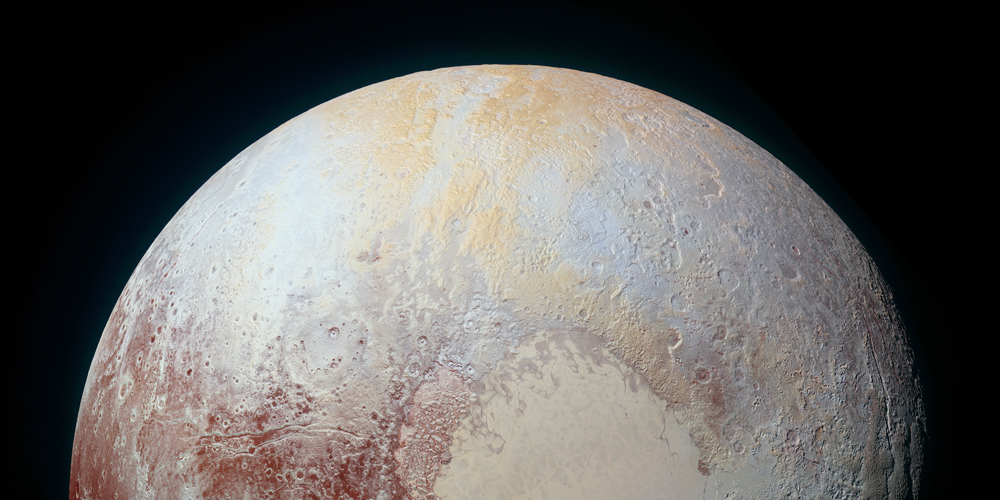
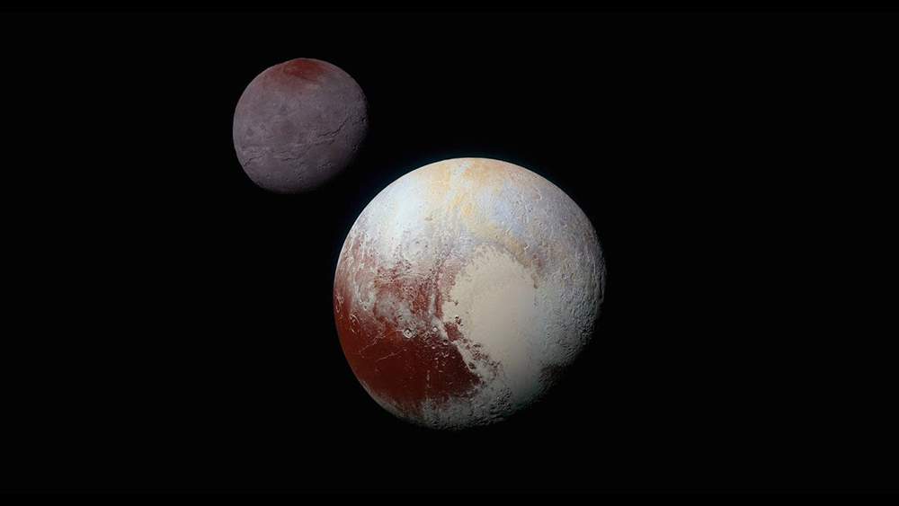

เล่าเรื่องพลูโต ดาวเคราะห์แคระแห่งหัวใจ
ฉบับเข้าใจง่าย
กลายเป็นภารกิจที่ได้รับความสนใจไปทั่วโลกอย่างปฏิเสธไม่ได้จริง ๆ สำหรับภารกิจนิว ฮอไรซันส์ (New Horizons) ปฏิบัติการสำรวจดาวพลูโต อันไกลโพ้น เพราะหลังจากที่รูปร่างลักษณะของดาวพลูโตเป็นปริศนาสำหรับมวลมนุษยชาติมาอย่างยาวนานนับตั้งแต่ค้นพบเมื่อ 85 ปีก่อน ในที่สุด นิว ฮอไรซันส์ ก็ทำให้เราได้เห็นดาวดวงนี้เป็นครั้งแรกแล้ว และเป็นเรื่องเซอร์ไพรส์สุด ๆ ด้วยเมื่อพบว่าภูมิประเทศบริเวณหนึ่งบนพื้นผิวดาวนั้นมีรูปร่างคล้ายกับรูปหัวใจ จนตอนนี้อาจกล่าวได้ว่า พลูโตได้สร้างรอยยิ้มและความประทับใจให้กับคนทั่วโลกแบบเหนือความคาดหมาย กระปุกดอทคอมวันนี้จึงขอหยิบยกเรื่องราวของอดีตดาวเคราะห์ น้องเล็กของระบบสุริยะดวงนี้ มาเล่าให้ฟัง ย้อนความรู้สมัยเรียนและทำความรู้จักพลูโตให้มากขึ้นอีกหน่อย
รู้จัก "ดาวพลูโต"
พลูโตเป็นดาวที่ถูกค้นพบเมื่อวันที่ 18 กุมภาพันธ์ 2473 โดยไคลด์ ทอมบอห์ นักวิทยาศาสตร์ชาวอเมริกัน เขาค้นพบดาวดวงนี้โดยบังเอิญขณะสำรวจท้องฟ้าที่หอดูดาวโลเวลล์ รัฐแอริโซนาของสหรัฐฯ และหลังจากค้นพบแล้ว พลูโตก็กลายเป็น "ดาวเคราะห์" อันดับที่ 9 ของระบบสุริยะ โดยเป็นน้องเล็กของระบบสุริยะ เนื่องจากขนาดที่เล็กมากของมันนั่นเอง
ดาวพลูโตมีเส้นผ่านศูนย์กลางเฉลี่ย 2,368 กิโลเมตร อยู่ห่างจากดวงอาทิตย์เป็นระยะทางเฉลี่ย 6 พันล้านกิโลเมตร หรือ 39.5 หน่วยดาราศาสตร์ (1 หน่วยดาราศาสตร์ = ระยะห่างระหว่างดวงอาทิตย์กับโลก) อยู่ในแถบไคเปอร์ หรือแถบพ้นดาวเนปจูน อันหนาวเหน็บ พลูโตจึงมีอุณหภูมิดาวอยู่ที่ประมาณ -230 องศาเซลเซียส หมุนรอบตัวเองใช้เวลา 6.4 วัน และโคจรรอบดวงอาทิตย์ 1 รอบ ใช้เวลานานถึง 248 ปี
วงโคจรอันน่าฉงนของดาวพลูโต
สิ่งหนึ่งที่สร้างความฉงนใจให้กับวงการดาราศาสตร์หลังจากค้นพบดาวน้องเล็กดวงนี้ ก็คือวงโคจรของมันที่แปลกแยกไม่เหมือนดาวเคราะห์ดวงอื่น ๆ ในระบบสุริยะ นั่นก็คือ ในขณะดาวเคราะห์ดวงอื่นมีวงโคจรที่ค่อนข้างกลมและโคจรเอียงจากระนาบสุริยวิถีเพียงเล็กน้อย พลูโตกลับเอียงจากระนาบสุริยวิถีไปมากถึง 17 องศา
ขณะที่การโคจรเป็นวงรีนั้น ก็ได้ทำให้พลูโตมีระยะห่างจากดวงอาทิตย์ที่แตกต่างกันอย่างมากมายในแต่ละช่วง คือ ช่วงห่างดวงอาทิตย์ที่สุดประมาณ 7 พันล้านกิโลเมตร ส่วนช่วงการโคจรที่ใกล้ดวงอาทิตย์ที่สุด อยู่ที่ประมาณ 4.2 พันล้านกิโลเมตรเท่านั้น ใกล้กว่าระยะห่างของดาวเนปจูนกับดวงอาทิตย์เสียอีก
แน่นอน เรากำลังจะบอกว่านอกจากจะโคจรเป็นวงรีและเอียงจากระนาบสุริยวิถีไปมากแล้ว พลูโตยังโคจรทับวงโคจรของดาวเนปจูนอีกด้วย
ดาวบริวารของพลูโต
พลูโตมีดวงจันทร์บริวารอยู่ทั้งหมด 5 ดวงด้วยกัน ได้แก่ คารอน (Charon), สติ๊กซ์ (Styx), นิกซ์ (Nix), เคอเบอรอส (Kerberos) และไฮดรา (Hydra) แต่ดวงจันทร์ที่เป็นที่รู้จักและได้รับความสนใจมากที่สุด คือ คารอน ดวงจันทร์ที่ใหญ่ที่สุดของพลูโต มีเส้นผ่านศูนย์กลางประมาณ 1,270 กิโลเมตร เรียกว่าใหญ่มากกว่าครึ่งหนึ่งของขนาดดาวพลูโตเสียอีก ด้วยขนาดที่ใหญ่เมื่อเทียบกับพลูโตเช่นนี้ อาจกล่าวได้ว่า คารอนไม่ใช่แค่ดาวบริวารของพลูโตเท่านั้น แต่คารอนกับพลูโตเป็นดาวเคราะห์แคระคู่ ที่โคจรรอบกันและกัน
พลูโตกับการลดขั้นเป็น "ดาวเคราะห์แคระ"
ดาวพลูโตกลายเป็นดาวเคราะห์น้องเล็กของระบบสุริยะมาโดยตลอด แม้จะมีขนาดเล็ก แต่นักวิทยาศาสตร์ก็ไม่เคยจัดให้มันอยู่ต่ำชั้นกว่า "ดาวเคราะห์" เลยนับตั้งแต่ค้นพบ จนกระทั่งในปี 2548 การเป็นดาวเคราะห์อย่างสง่าของพลูโตก็เริ่มสั่นคลอน เมื่อนักวิทยาศาสตร์ได้ค้นพบวัตถุอวกาศที่อยู่ไกลจากพลูโตออกไป และหลายดวงก็มีขนาดใหญ่พอ ๆ กันกับพลูโต บางดวงใหญ่กว่าพลูโตด้วยซ้ำ
วงการดาราศาสตร์จึงเริ่มเกิดคำถามว่า เมื่อมีวัตถุอวกาศขนาดพอ ๆ กับพลูโตอยู่ห่างออกไปอีกเช่นนี้ จะจัดวัตถุอวกาศที่ค้นพบหลายดวงนั้นเป็น "ดาวเคราะห์" ทั้งหมด หรือจะทำอย่างไรกันดี สุดท้ายทางออกของปัญหาดังกล่าวก็สิ้นสุดลงที่ การจัดประเภทดาวขึ้นมาใหม่เรียกว่า "ดาวเคราะห์แคระ" พร้อมกับนิยามคำว่า "ดาวเคราะห์" ให้แคบลงดังนี้
1. โคจรรอบดาวฤกษ์โดยตรง ไม่เป็นบริวารของดาวใดอีกทอดหนึ่ง
2. มีมวลมากพอที่จะมีแรงโน้มถ่วง ทำให้ดาวอยู่ในภาวะสมดุลจนมีรูปร่างเป็นทรงกลม หรือเกือบกลมได้
3. มีวงโคจรที่ชัดเจน สอดคล้องกับดาวเคราะห์ข้างเคียง และกวาดวัตถุอวกาศออกจากวงโคจรของตัวเองได้
ดาวพลูโตจึงตกชั้นกลายเป็น "ดาวเคราะห์แคระ" ไป ไม่สามารถเรียกว่าดาวเคราะห์ได้อีกต่อไปเมื่อไม่ผ่านคุณสมบัติข้อ 3
ภารกิจไขปริศนาพลูโต "นิว ฮอไรซันส์"
นับตั้งแต่ค้นพบดาวพลูโตเมื่อปี พ.ศ. 2473 ดาวดวงนี้ก็เป็นดาวเคราะห์แคระตกสำรวจมาโดยตลอด แม้ว่าจะมีการส่งยานอวกาศออกไปหลายลำเพื่อสำรวจดาวเคราะห์ชั้นนอก (ดาวพฤหัส ดาวเสาร์ ดาวยูเรนัส และดาวเนปจูน) แต่ก็ยังไม่สามารถเดินทางไปสำรวจพลูโตได้
เมื่อเป็นเช่นนั้น ตลอดเวลากว่า 85 ปีที่ผ่านมา มนุษย์จึงไม่เคยได้รู้ว่าดาวพลูโตมีลักษณะเป็นอย่างไร เราทำได้เพียงแค่จินตนาการและสันนิษฐานจากความน่าจะเป็นเท่านั้น กระทั่งเมื่อปี 2544 องค์การบริหารการบินและอวกาศแห่งชาติสหรัฐฯ ก็ได้ผุดแผนการสำรวจดาวพลูโตขึ้นมา
นิว ฮอไรซันส์ (New Horizons) เป็นยานสำรวจดาวพลูโตของ NASA ถูกปล่อยออกสู่ห้วงอวกาศเมื่อวันที่ 19 มกราคม 2549 โดยมีจุดมุ่งหมายที่จะพุ่ง "เฉียด" ดาวพลูโตในระยะใกล้ที่สุดที่ 12,500 กิโลเมตร เพื่อสำรวจลักษณะพื้นผิว อุณหภูมิ และชั้นบรรยากาศของดาวพลูโตและคารอน ก่อนที่จะเดินทางต่อไปเพื่อค้นหาดวงจันทร์และวัตถุอวกาศที่อยู่โดยรอบ รวมถึงวัตถุอวกาศที่ไกลจากพลูโตออกไปอีก โดยยานก็จะเดินทางไปเรื่อย ๆ ไปแล้วไปลับ ไม่กลับมาอีก และในภารกิจนี้ NASA ได้ส่งเถ้ากระดูกของไคลด์ ทอมบอห์ ผู้ค้นพบพลูโตติดกับยานไปด้วย นับเป็นการส่งชิ้นส่วนมนุษย์ออกไปไกลที่สุดในประวัติศาสตร์มวลมนุษยชาติ
นิว ฮอไรซันส์ ออกเดินทางตั้งแต่ช่วงที่พลูโตยังเป็นดาวเคราะห์น้องเล็กของระบบสุริยะ แต่หลังจากนั้นเพียง 7 เดือนต่อมา มันก็ถูกลดขั้นกลายเป็นดาวเคราะห์แคระ จึงอาจกล่าวได้ว่า เมื่อ นิว ฮอไรซันส์ ออกเดินทาง พลูโตยังเป็นดาวเคราะห์อยู่ แต่เมื่อไปถึง พลูโตกลับกลายเป็น "ดาวเคราะห์แคระ" ไปเสียแล้ว

เผยภาพดาวพลูโต ครั้งแรกในประวัติศาสตร์มนุษยชาติ
หลังจากเดินทางอย่างเคว้งคว้างในอวกาศมายาวนานกว่า 9 ปี ในที่สุด นิว ฮอไรซันส์ ก็บรรลุเป้าหมาย เดินทางเฉียดดาวพลูโตในระยะห่างเพียง 12,500 กิโลเมตร เมื่อวันที่ 14 กรกฎาคม 2558 และระหว่างที่กำลังเดินทางเฉียดนั้น ก็ได้จับภาพดาวพลูโตมาได้อย่างชัดเจน เผยโฉมพลูโตให้โลกเห็นว่ามีหน้าตาน่าประทับใจเช่นนี้ เพราะมีภูมิประเทศรูปหัวใจที่ทำให้หลายคนพลอยยิ้มไปด้วย ขณะที่ผู้คนทั่วโลกก็ต่างพากันจินตนาการว่ามันเป็นได้มากกว่าหัวใจ เป็นหัวเจ้าพลูโต ตูบแสนซนของมิกกี้เม้าส์ก็ได้ ขณะที่ทาง NASA เอง เตรียมตั้งชื่อภูมิประเทศรูปหัวใจนี้ว่า "ทอมบอห์ เรจิโอ" เพื่อเป็นเกียรติแก่ผู้ค้นพบนั่นเอง
อย่างไรก็ดี นอกจากภาพของพลูโตแล้ว NASA ยังได้เผยภาพของคารอน ดวงจันทร์ (หรือดาวเคราะห์แคระคู่) ของพลูโตออกมาให้คนทั่วโลกให้ได้ชมกันชัด ๆ เป็นครั้งแรกอีกด้วย